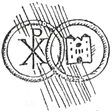

Bóg stworzył mężczyznę i kobietę na obraz i podobieństwo Swoje. Obydwoje mają tę samą ludzką naturę i mają się wzajemnie uzupełniać. Zostali powołani do przekazywania życia następnym pokoleniom. Nowe życie powinno być owocem wzajemnej miłości małżonków, będącej odblaskiem miłości Boga Stwórcy. Od początku dziejów ludzkości małżeństwo było rzeczą świętą.
Już w Starym Testamencie przymierze Boga z ludem wybranym było porównywane do związku małżeńskiego. Małżeństwo jest również obrazem związku Chrystusa i Kościoła. Chrystus umiłował Kościół jak oblubienicę i umarł zań. Miłość ta jest płodna. Kościół bowiem stał się matką wszystkich odkupionych.
Wzajemne oddanie się Chrystusa i Kościoła jest wzorem prawdziwej miłości małżeńskiej, która polega na wzajemnym poświęceniu. Kobieta składa w ofierze swój wdzięk i potęgę swej miłości; mężczyzna poświęca swoją swobodę i wszystkie wysiłki, aby wybranej zgotować szczęśliwe życie. Do tej ofiary należy dołączyć wszystkie trudy i troski wspólnego życia i wychowania potomstwa. Dlatego jest życzeniem Kościoła, aby zawarcie małżeństwa łączyło się ze Mszą św., w czasie której nowożeńcy połączą swoją ofiarę z ofiarą Chrystusa Pana.
Aby uchronić małżonkow i ich potomstwo od doczesnych i nadprzyrodzonych szkód, Pan Bóg zakazał małżeństwa w pewnych okolicznościach. Z tych samych powodów Kościół ustanowił dalsze przeszkody małżeńskie. Niektóre z nich uniemożliwiają zawarcie ważnego małżeństwa, inne wymagają dyspensy, której Kościół udziela z ważnych przyczyn.
Znakiem sakramentalnym małżeństwa jest wzajemne oświadczenie oblubieńców, że zawierają związek małżeński, złożone